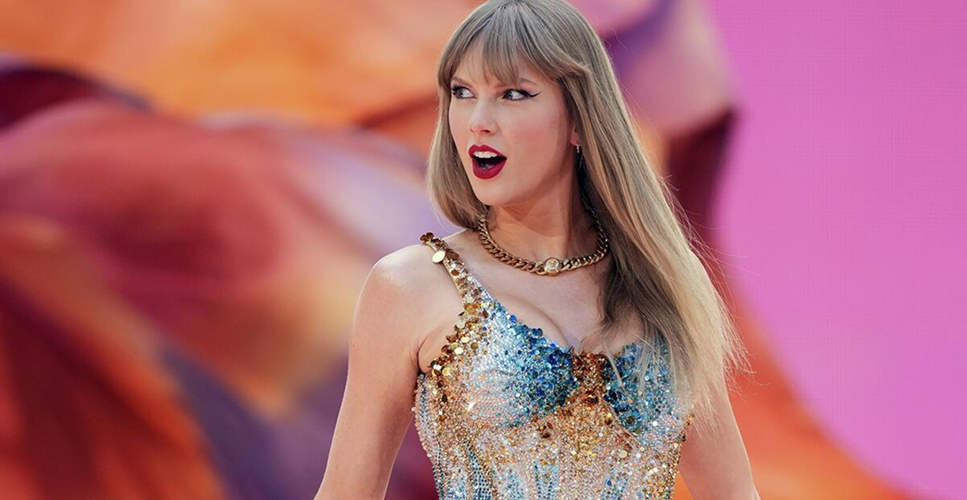
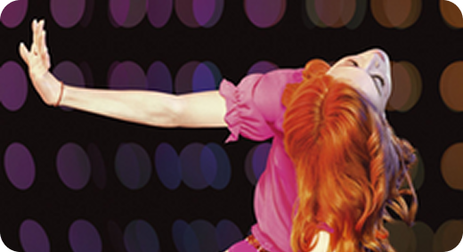
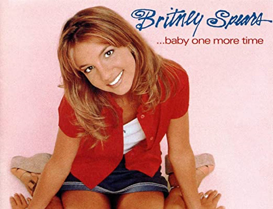
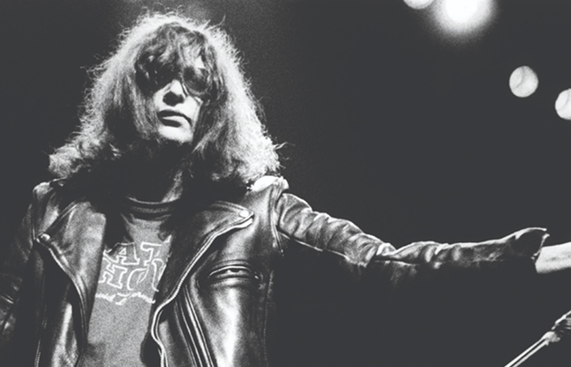

Rankings de la comunidad
Este ranking se basa en los top 10 compartidos por la comunidad.
Cuantos más tops incluyan un álbum y mejor posición tenga en ellos, más alto aparecerá en el ranking.
¿Cómo funciona?
- Los usuarios crean su top 10 de álbumes favoritos.
- Cada posición suma puntos (1°lugar = 10 pts, 10°lugar = 1 pt.)
- Los álbumes se ordenan por la suma total de puntos.


Rankings Rollingstone

Los 50 artistas de pop mas escuchados en 2026
Desde Taylor Swift y Billie Eilish hasta las nuevas estrellas del género, descubrí quiénes lideran los rankings y acumulan millones de reproducciones en todo el mundo.
Seguir leyendo
"10 albumes más escuchados en los 2000
Una selección de los discos que marcaron una generación. Desde Back to Black hasta The Fame, repasamos los álbumes que definieron el sonido de los años 2000.
Seguir leyendo50 grandes álbumes del 2025
Desde la fantasía y la magia de Fito Páez, hasta la orgánica calidez de Natalia Lafourcade, pasando por el impacto global de Bad Bunny abriendo el año de forma arrasadora.
Seguir leyendo
10 artistas de los ‘90 que revolucionaron la música
Conocé a figuras icónicas como Nirvana, Madonna y Tupac Shakur, artistas que rompieron esquemas y cambiaron para siempre la forma de hacer y escuchar música.
Seguir leyendo
Los 10 mejores álbumes de punk de todos los tiempos, según Rolling Stone
Una lista que va de rockeros neoyorquinos hasta anarquistas británicos: un recorrido por discos que redefinieron la rebeldía en la música
Seguir leyendo